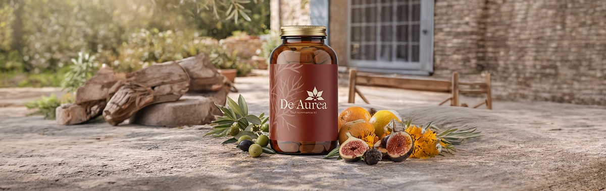
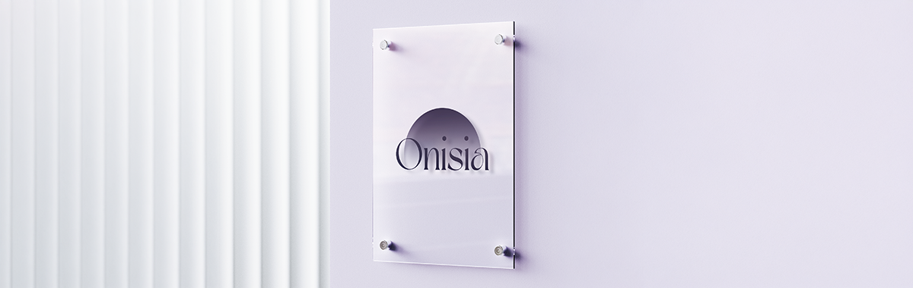
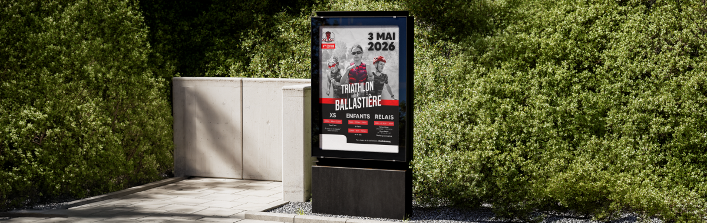
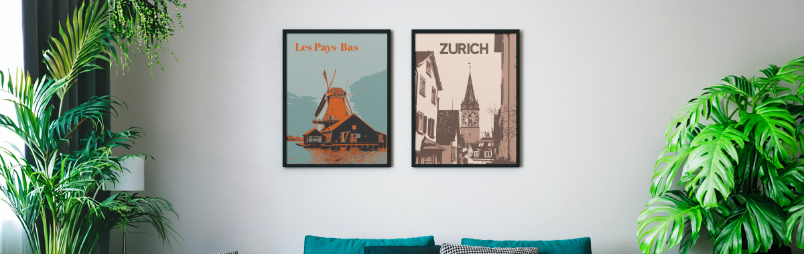
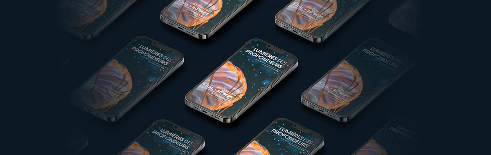

Concevoir une charte graphique complète, allant du logo aux composants UX pour le site web, en passant par des supports print, du contenu pour les réseaux sociaux et des vidéos en motion design.
Voir le projet →
concevoir l’identité complète d’une chaîne de télévision dédiée à la musique, incluant la charte graphique, ses déclinaisons print et web, ainsi que l’animation du logo.
Voir le projet →
Concevoir une marque complète et fabriquer nos produits au Fab Lab, en utilisant différentes techniques comme la découpe laser, le flocage, la gravure et la création de stickers.
Voir le projet →
Refondre l’identité graphique d’une ferme, incluant la création de supports visuels et la refonte de son site web.
Voir le projet →
Création d’affiches destinée au Musée Zoologique de Strasbourg, réalisée à partir d’un style graphique imposé.
Voir le projet →

Création d'affiches souvenirs correspondant à mon propre univers graphique.
Voir le projet →
Exposition immersive éphémère pour laquelle j’ai réalisé les supports de communication web.
Voir le projet →
Projet de 3D réalisé sur Blender. De la phase de conception 2D sur papier jusqu’à la modélisation et mise en scène finale en 3D
Voir le projet →